SHERPA
An application that helps cyclists perform maintenance and repair tasksRole User Experience Research Lead Technological Lead
Team Kevin Key, Varnit Jain, Benton Humphreys, Yunfei Wang Timeline Aug 2019 - Nov 2019
RESEARCH
1. Interviews
The first step in our research process was to talk to users about their riding habits. We interviewed seven users and asked them about their bicycling habits. We were interested in their frustrations and motivations related to performing repairs and maintenance tasks.
2. Online Survey
We analyzed the data to make sense of the research direction and created an online survey. The survey enabled us to a lot of get data from a wide demographic.
We had three main interest areas:
1. Bicycling Frequency and Purpose
2. Repair/Maintenance Experience
3. Common Frustration or Pain Points
We circulated the survey on online bicycling communities and received 67 responses.
3. Affinity Mapping
After concluding our two research methods, we decided to use affinity modeling to combine the information we had gathered to find common themes and pain points. We turned the survey data and interview answers into high quality notes for modeling and created the affinity model found below. After completing the affinity model, we added our own design ideas and questions to areas we found relevant to help with concept generation.
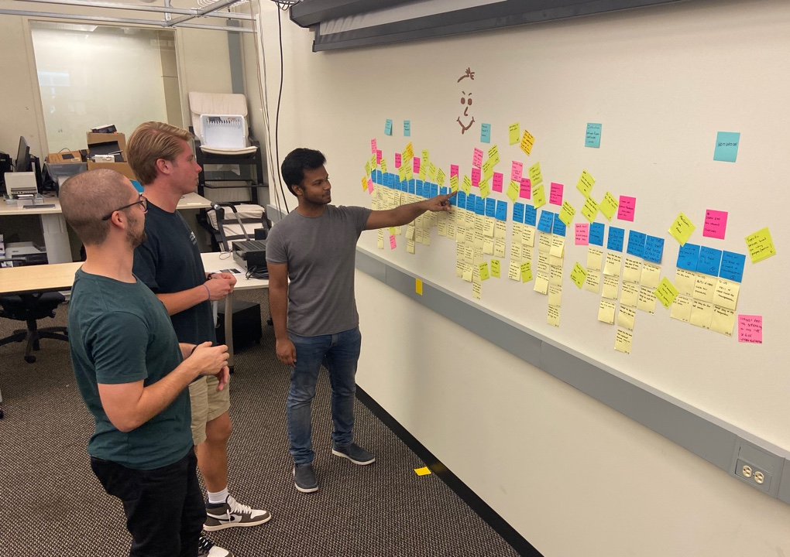
4. Pain Points
While we liked the ideas and thought were very relevant, we realized we had not given enough importance to our user’s pain points by going straight to design ideas. We decided to go back to the affinity model to find common problems found from our research and then developed those into seven pain points that represent our user group.
1. Users lack the resources (e.g. tools, space) to perform bicycle maintenance
2. Users unfamiliar with maintenance rely and depend on others with more experience
3. Community resources are not readily available
4. Users feel helpless when they are unable to perform maintenance tasks themselves
5. Instruction guides do not directly correlate to the user’s own bike components or situation
5. Users have difficulty performing maintenance tasks for the first time
5. Users can be apprehensive to visit bike shops due to perceived cost
5. Data Analysis
After noting down the pain points, we weighed each design idea based on relevance, feasibility, and creativity to weed out ineffectual ideas. Once we had a list of features, we decided to group our design ideas into broader categories based on similar topics. We came up with the following themes:
1. Online resources pool
2. Diagnostic tools
3. Integrated Technology
4. Community repair stations
5. Gig economy
6. Gamification
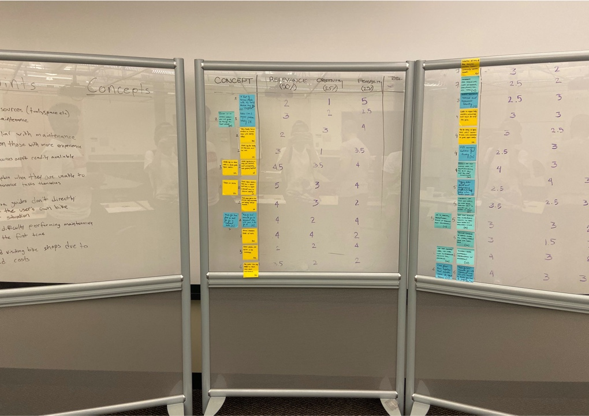
Post analyses of all themes, we focused on three design directions which solved most of the pain points. We ensured that each design direction was varied and targetted a unique yet overlapping set of user groups.
Design 1: Promote self-sufficiency
Design 2: Leverage community resources
Design 3: Reliance on others with more knowledge
CONCEPTS
After we had all of our themes, we further analyzed them based on how many pain points they tackled. Once we had the top three themes decided, we further refined them into concepts by naming them, determining the specific features and functionality of each, and creating brief scenarios to explain their particular use cases.
Concept 1: Sherpa
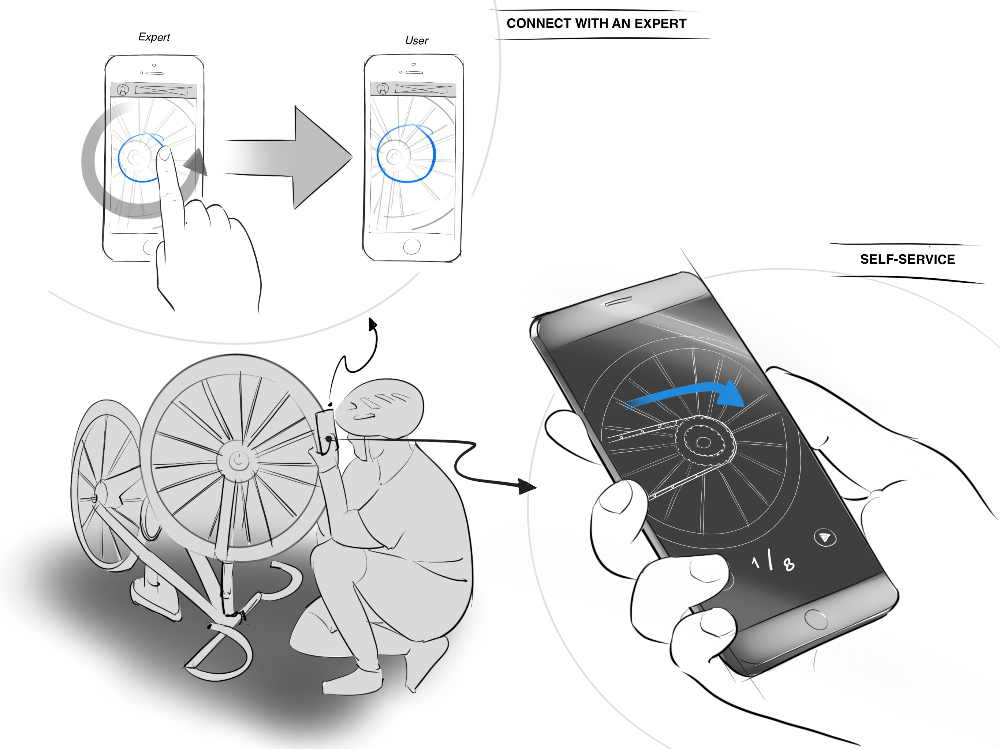
Sherpa is a mobile application that provides the user with step-by-step guidance for diagnosing and fixing common maintenance issues. The app will use the phone’s camera and computer vision to recognize parts and prompt the user with questions to help them discover and fix the problem. If the user cannot diagnose or fix the problem themselves, they can use a paid function to connect with an expert, who will be available by video stream and an onscreen “drawing” feature.
- Self-Sufficiency
- Trust In Others
- Cost Efficiency

Concept 2: NorthStar
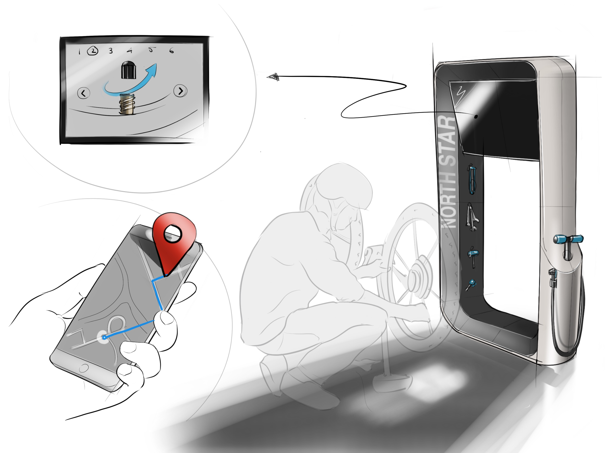
Northstar is a concept that redefines what a public-use bicycle repair station can be. It provides users with free-to-use tools, resources, and has the added element of an interactive screen that can guide users through general repair processes. It is designed to be integrated with Google Maps to make discovering repair station locations more accessible. Further, it leverages community input in the form of users reporting issues that inform others of the available tools/resource.
- Self-Sufficiency
- Community Resources

Concept 3: LifeCycle
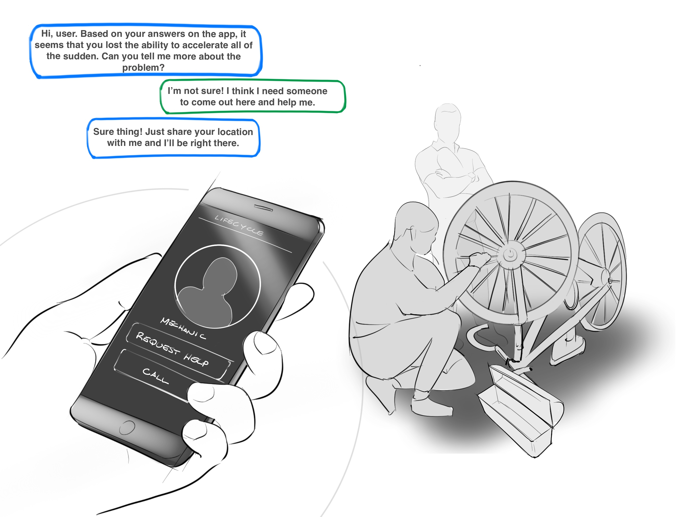
Life Cycle is a “gig-economy” service that connects users with nearby bicycle repair technicians. It is a pay-per-use service that can help a user who does not know how to repair their bike connect with someone who does. In the event of an emergency maintenance situation, the user has the option to request a pick up from a certified bicycle technician, who will attempt to fix the bicycle on location, or transport it (and the user, if necessary) to a more suitable location.
- Convenience
- Gig-Economy
- Emergency Situations

Concept Evaluation
To test our design ideas, we created another survey to reach out to a wider audience. To achieve the same, we shared the survey not only to bicycling communities but also on famous facebook, reddit pages. This survey focused on Learnability, Efficiency, Memorability, Errors, Satisfaction as well as feature level evaluations. We wanted to know which features seemed attractive and useful to users and which ones felt obsolete to them. We received 44 responses and evaluated which features overcame initial pain points and were appreciated by the users.
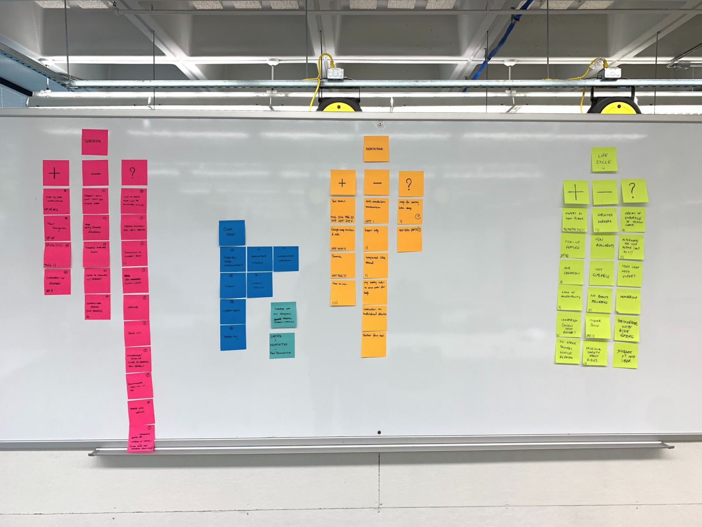
SOLUTION
Our final solution contains most parts of Concept 1 - Sherpa and one part of Concept 2 - NorthStar. We realized that not a lot of users will want to pay for an expert's advice, they would rather take their bicycle to the shop; so we removed the expert advice feature. We also noticed that users do not carry tools all the time so we integrated the Repair Station Locator feature from NorthStart to display public repair stations.
Features
1. User Profile
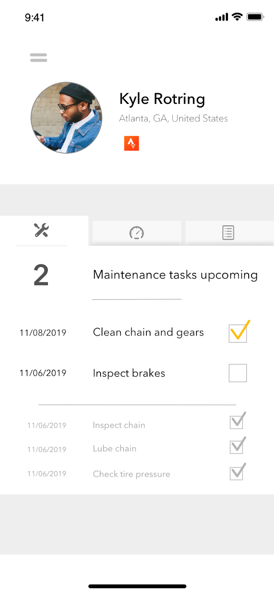
The user can set up a custom profile that will allow them to track their use of the app, maintain a maintenance schedule, and connect to the activity app “Strava.” This fits into the idea of Sherpa being an integrated product, and leverages Strava’s capabilities for activity tracking.
2. Bicycle Selection
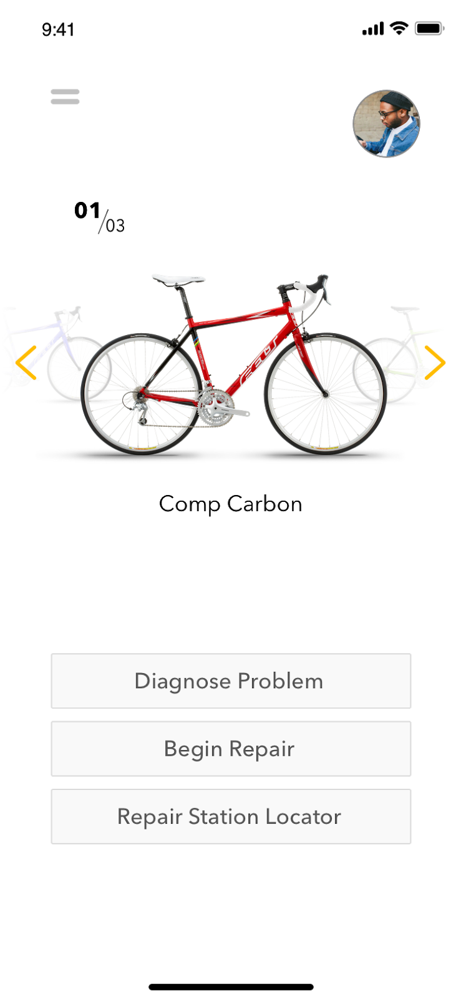
This details the type of bicycle(s) that the user has, and allows them to input custom components. As repairs might be different based on the type of bicycle a user has, a “bicycle profile” can be created. These bicycles will be displayed on the home screen, and the user can easily cycle through them.
3. Diagnostic Tool
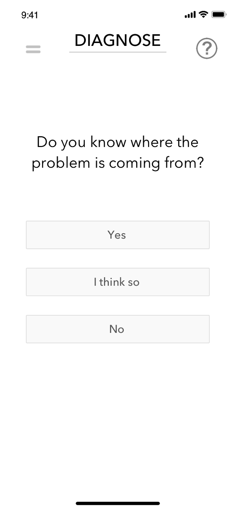
The diagnostic tool is a feature which helps users determine the problem with their bicycle. Once the option is selected, the user will be prompted with a series of questions. The question flow will depend on the answers which will help the user narrow down on a specific problem. The users who already know the issue with their bicycle can choose to skip the diagnostic tool.
4. Repair Guide
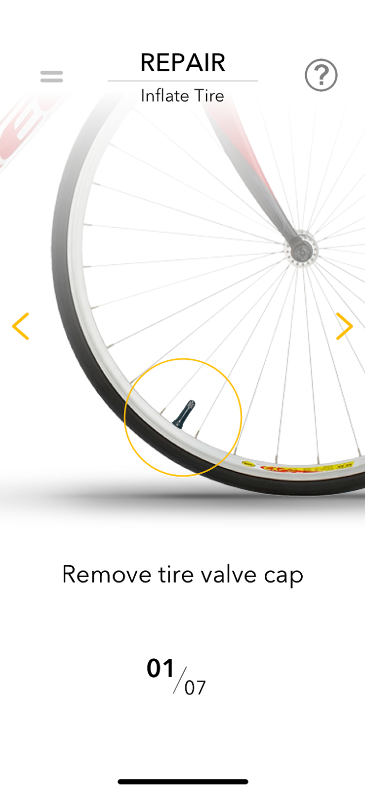
Once the user knows the problem with their bicycle, they will use the repair guide to perform repairs. The repair guide is a step by step process that tells users what to do. For each step, the user will see a small visual of the repair. We understand that the user might have to use both their hands to perform repairs and it is often not feasible to physically touch the phone or even look at it. Owing to these concerns, the repair guide has two audio elements: (1) An audio guide which speaks the step that is to be performed (2) Once the step is completed, the user can speak “Next” which moves the system to the next repair step
5. Part Identification
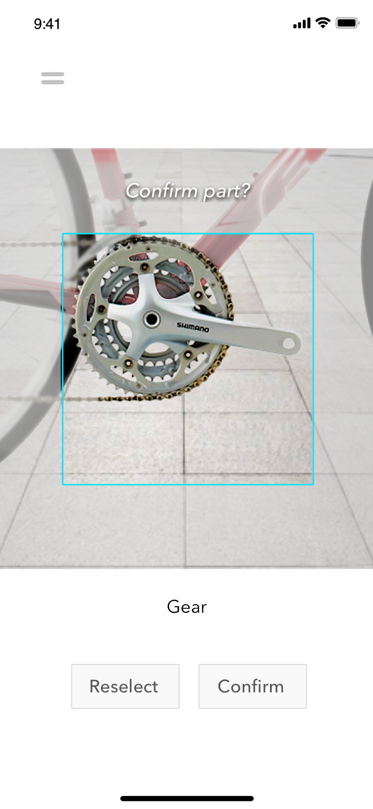
The part identification tool is used when the user can not recognize a certain part mentioned in the repair guide. Sherpa uses augmented reality to help the user identify the part. The user scans their bicycle using their phone camera and the selected part is highlighted when hovered upon. The feasibility of the augmented reality tool is supported by the fact that all bike manufacturers have 3D models of their bicycles which can be leveraged to support this tool.
6. Repair Station Locator
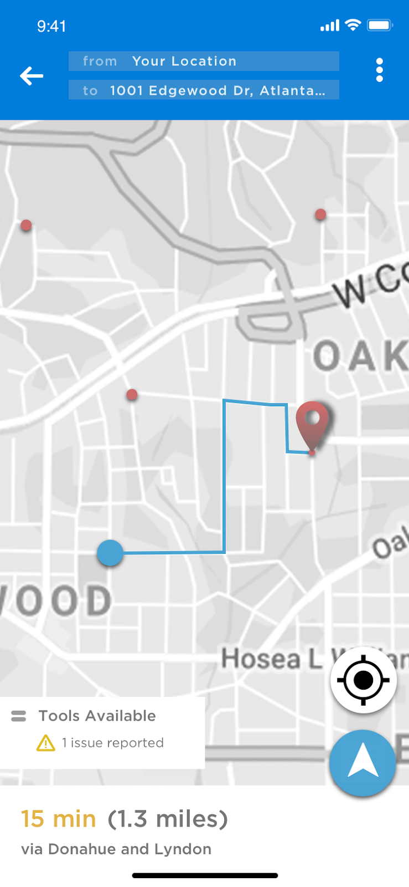
The repair station Locator is used in cases when the user doesn’t have the required tools to perform the repair process. They can use this tool is used in combination with Google Maps to direct the user to the nearest public repair station. The application also shows a list of tools available at any given repair station so that users can decide if a particular repair station has all the tools they need or not.
Prototype
We will first need to validate our design concept with our users on the basis of usability and adequacy in diagnosing problems and the repair process. Further, we will want to test different methods of interaction to determine what users find most appropriate while in the context of repairing a bicycle.
Below is a mid-fidelity prototype that was built with Sketch, and it will be used to gauge initial feedback. We chose to produce a mid-fidelity prototype as a starting point, as it will be easy to refine and iterate without getting bogged down by aesthetic and low-level detail considerations. However, given our short time to complete this project, we have started developing an aesthetic direction as well, of which a few core screens are visualized in the previous section.
Our users will likely be implementing our mobile app on a smartphone, and as such, we have used a program (Sketch) that will allow us to push the interactive prototype to an iPhone. We want to gauge the effectiveness of this prototype at discovering and solving problems with maintenance, and will include enough information in the prototype to allow the participant to have a sense of how this will help them with the aforementioned tasks.
Though the entire prototype has been built out to show the majority of screen interactions, some paths of the prototype are more valuable to our purposes of user testing than others. For our purposes, we will identify a task (in this case, it is a flat tire) that we want the user to complete, and ask them to first diagnose the problem until they discover it and the app confirms that this is the correct problem. Within the diagnosis process, they will utilize the part identification feature to recognize and confirm that their tire has low air pressure. Once confirmed, they will indicate that they do not have the appropriate tools to complete the task, and will then be directed to the repair station locator. From here, they will identify which repair station to use, then determine if it has the appropriate tools to inflate their tire. Finally, they will be walked through a simplified version of the repair.
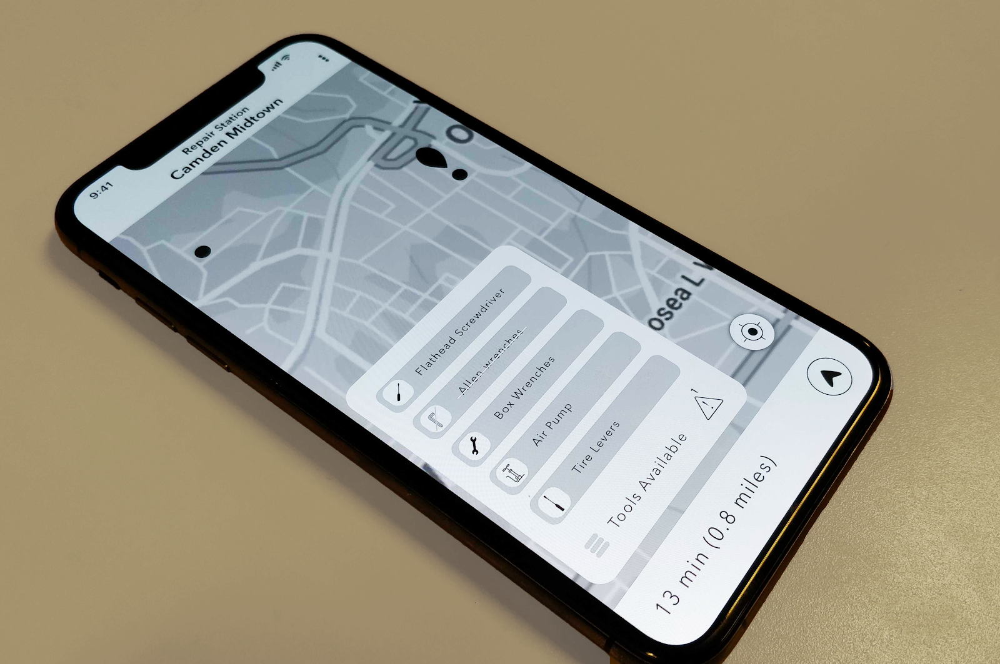
TESTING
We are currently testing the prototype. Results will be out soon.